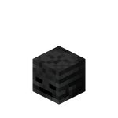
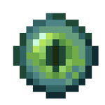

Fiche d'Identité
Nom : Tête de mobs
Type : Bloc
Rareté : Uncommun
Gravité : Non
Transparence : Oui
Luminosité : Non
Résistance : 1
Dureté : 1
Outil : N'importe quel outil
Renouvelable : Oui
Stackable : Oui (64)
Inflammable : Non
Premières apparitions : 4.0
Butin : Lui-même
Description
La tête de mobs est normalement droppée grâce à un creeper chargé. Ce n'est plus le cas grâce à SimpleCraft.
Crafting
 |
||
Résultat :
|
||
Résultat :
|
||
Résultat :
|
||
Résultat :
|  | ||
|
||